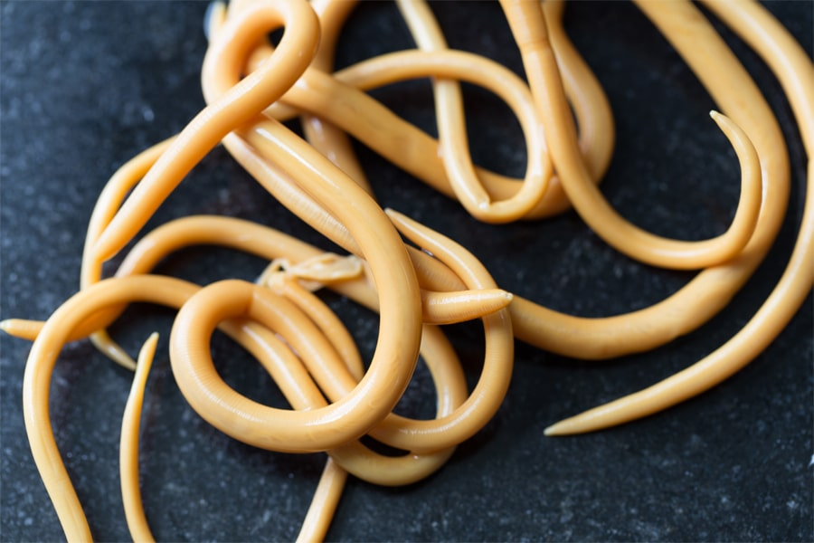

По данным ВОЗ, организм каждого третьего человека заражен паразитами. Гельминты обитают не только в желудочно-кишечном тракте: личинки паразитов могут мигрировать по кровотоку и разноситься по всему организму. Средой обитания паразитических червей могут стать почки, легкие, печень, мозг, сердце, половые органы, личинки паразита могут завестись даже в глазах.
Глисты вызывают воспаления и отравляют организм. Головная боль, нарушения сна, слабость, боли в животе, простуда – первые признаки глистной инвазии. Можно ли раз и навсегда избавиться от паразитов? Наша читательница Анна Бойко расскажет об истории своей болезни и выздоровлении.
«Здравствуйте! Меня зовут Анна, мне 40 лет. Около года назад я почувствовала первые признаки недомогания: слабость, головные боли, быстрая утомляемость. Начались проблемы со сном – вечером было трудно заснуть, а с утра проснуться. Периодически незначительно поднималась температура, примерно до 37.2°C.
Мне сложно было сконцентрироваться на работе, выполнять домашние обязанности. Постоянно хотелось прилечь – только в таком положении я чувствовала себя хорошо. Это состояние я связывала со стрессом и переутомлением, поэтому взяла отпуск на работе. Думала – отдохну, и все пройдет. Но лучше не стало: весь отпуск я провела дома, едва ли находя силы, чтобы выбраться с утра из кровати. Плохое самочувствие не отступало.
Со временем добавились и новые симптомы
Боль в желудке и тошнота после еды, утренний кашель с незначительным количеством мокроты, но очень досаждающий. Плюс ко всему, я стала часто болеть простудными заболеваниями, хотя раньше дальше насморка заходило редко.
Я то и дело обращалась к врачам, которые направляли меня от одного специалиста к другому. Оториноларинголог ставил диагноз фарингит, гастроэнтеролог – гастрит. Невролог вообще не мог связать все симптомы воедино и поставить точный диагноз, поэтому выписал успокоительное. Мол, все болезни от нервов.
Мне прописывали огромное количество препаратов, таблеток, сиропов от кашля. Да, эти средства помогали, но лишь на некоторое время. Как только я прекращала прием лекарств, становилось еще хуже.
Помощь рядом
Моя хорошая подруга, желая как-то помочь, записала меня на прием к своему лечащему врачу. Им оказался профессор – пожилой мужчина, всю жизнь посвятивший медицине.
К нему я пришла с огромной стопкой анализов и историей болезни. Внимательно изучив документы, доктор задал мне вопрос: «А вы проверялись на паразитов?». После моего отрицательного ответа он направил меня на сдачу анализов.
Результаты анализов повергли меня в шок
Паразитические черви обнаружились не только в верхнем отделе кишечника, по кровотоку их яйца попали даже в легкие и печень. Отсюда – частые простудные заболевания и мучительный кашель.
Мне было сложно поверить в то, что у меня обнаружились глисты. Как так?! Я ведь всегда строго соблюдала правила гигиены!
Осталось самое главное – лечение!
Доктор назначил мне средство под названием BacteOFF. Одного курса препарата было достаточно, чтобы очистить организм от глистов. Как сказал врач, главное преимущество этого средства в том, что оно губительно только для паразитов, а не для организма человека, в отличие от химических средств.
Спустя всего неделю после начала курса, я почувствовала заметное улучшение состояния: наладился сон и пищеварение. К концу курсового приема BacteOFF я чувствовала себя так, будто бы заново родилась: больше не было никаких головных болей, кашля, постоянного желания принять горизонтальное положение. Я ощутила прилив сил и бодрость, чувствовала легкость в теле, сон стал крепким и долгим.
Закончив принимать BacteOFF, я снова сдала анализы на паразитов, и они были отрицательными!
Избавившись от непрошенных гостей, я наконец-то смогла вернуться к полноценной жизни: начала заниматься спортом, сбросила 10 лишних килограммов и не собираюсь останавливаться на достигнутом.
По совету врача, я время от времени принимаю BacteOFF для поддержания общего иммунитета организма и очищения от шлаков и токсинов.
Очень надеюсь, что моя история окажется полезной для многих людей, которые страдают от недомогания и не могут найти причину своего плохого самочувствия. Скорее всего, проблема заключается именно в паразитах, которые день изо дня высасывают из вас жизнь».
От редакции: мы поговорили о препарате BacteOFF с доктором медицинских наук, практикующим врачом-инфекционистом Национального Исследовательского Медицинского Института Сергеем Афанасьевым:
«BacteOFF – уникальный в своем роде растительный препарат, который эффективно борется фактически со всеми видами паразитов. Он безопасно выводит гельминтов и их фрагменты из органов и кровотока, полноценно очищает и восстанавливает организм после интоксикации. У препарата 100% натуральный состав, поэтому он полностью безопасен для применения и не имеет побочных эффектов».
Примечание: Сейчас препарат BacteOFF доступен для заказа на официальном сайте производителя со скидкой.
Купить BacteOFF на сайте производителя
Тоже пила BacteOFF для улучшения работы пищеварительной системы и очищения от шлаков. Результатом очень довольна, чувствую себя намного лучше
Кошмар! Мне врачи ставят «синдром хронической усталости» и «синдром раздраженного кишечника». Постоянно чувствую себя вялым, днем жутко хочется спать, а ночью валяюсь без сна, глядя в потолок…вообще, симптомы очень похожи на ваши, Анна. Заказал себе BacteOFF, надеюсь, поможет!
Да, компетенция обычных врачей в больницах, к сожалению, оставляет желать лучшего. Что нам теперь, всем обращаться к профессорам, чтобы получить квалифицированную помощь? Или сразу подбирать деревянный ящик по размерам??
А меня много лет мучила ангина. Осложнения уже пошли на сердце. И никто из врачей не мог назначить правильное лечение. Выяснилось, что все дело тоже в паразитах. Сначала мне прописали другой препарат (что-то химическое), но пришлось прекратить курс, так как из-за него начались проблемы с желудком. Потом начала пить BacteOFF. Тоже хватило одного курса, чтобы избавиться от болячки
Как раз с парнем сейчас пьем курс. Заразились от кошки, в следующий раз будем осторожнее. Правда мы узнали почти сразу, нам просто повезло с доктором, тоже прописал этот препарат. Говорит, что сейчас это лучшее средство от паразитов на рынке.
Жутко от вашей истории, Анна!
Спасибо за рекомендацию
О препарате знаю. С проблемой тоже, увы, сталкивалась. Всегда покупаю запас BacteOFF перед летом, когда есть вероятность не домыть овощи, фрукты.
У меня в прошлом году тоже во время планового обследования нашли паразитов
Покупал для профилактики, все прошло нормально, без последствий.